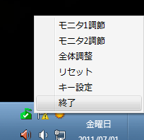

English / Japanese
画面の明るさを変更するソフトウェアです。
主にFPSゲーマー向けで、設定を変更すると以下の画像のように暗いところが見やすくなります。
特徴
- モニタの明るさ(ガンマ値)を変更出来る
- マルチモニタ環境ではモニタごとに異なる明るさを設定可能
- キーボードショートカット対応
デフォルトはCtrl + PageUpで明るさアップ、Ctrl + PageDownで明るさダウン、Ctrl + Resetで初期状態(変更可能)
-
デスクトップに現在の明るさ設定を保存したショートカットを作成可能
作成したものをダブルクリックですぐにその設定に変更することが出来ます
使い方
起動するとタスクトレイに常駐しますので、右クリックメニューから詳細な設定を行ってください

執筆中です...
ダウンロード
-
Windows7(32/64bit): Gauss_latest.zip
※1: 動作確認しているのは上記環境だけですが、もしかしたら他の環境でも動作するかもしれません
※2: グラフィックボードがガンマ変更に対応していない場合動作しません